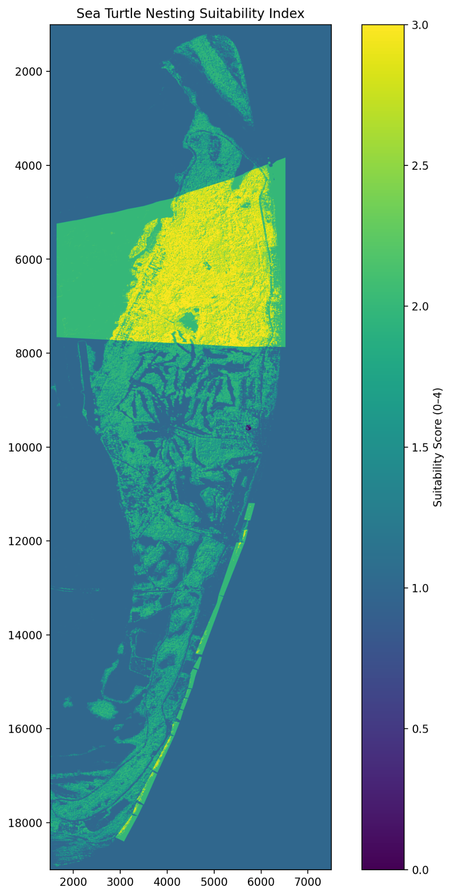
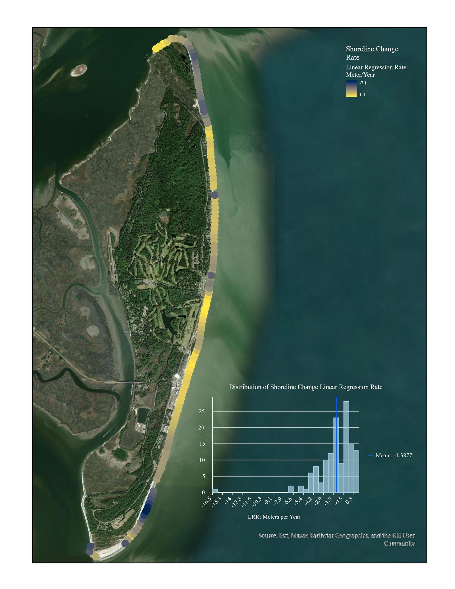
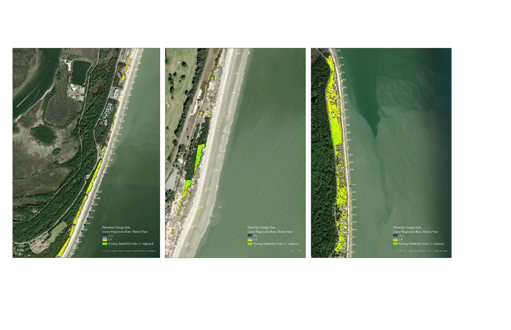
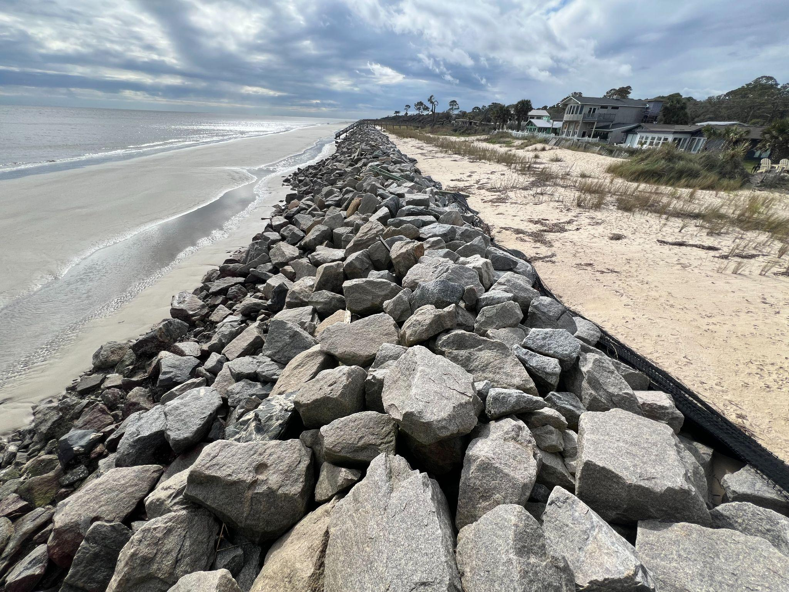

Geospatial Research
Predicting Sea Turtle Nesting Habitats on Jekyll Island
A geospatial habitat suitability model combining MCDA, remote sensing, LiDAR-derived terrain interpretation, and shoreline change analysis to identify potential loggerhead nesting habitat along the Georgia coast.
Project Overview
This project evaluates where loggerhead sea turtles may still find suitable nesting habitat on Jekyll Island today. I built a spatial habitat suitability model that combines vegetation, dune presence, shore slope, and anthropogenic lighting into a multi-criteria decision framework, then used shoreline change as a separate interpretation layer to evaluate longer-term viability.
Rather than treating the coastline as uniformly suitable or unsuitable, I wanted to translate ecological nesting preferences into a geospatial workflow that could show where habitat appears promising, where it is vulnerable, and where modeled suitability begins to break down against field reality.
Why This Matters
Jekyll Island is an important loggerhead nesting site, but it is also a dynamic and heavily managed coastline. Development, shoreline modification, erosion, lighting, and geomorphic change all shape the conditions turtles encounter when they come ashore.
That made this project less about producing a single habitat map and more about asking a practical conservation question: where does suitable nesting habitat still exist, and how much confidence should we place in those areas over time?
Approach
MCDA workflow
I built a multi-criteria decision analysis workflow that turns ecological preferences into a spatial suitability index.
Four core variables
NDVI / vegetation, shore slope, dune presence, and distance from anthropogenic lighting were standardized and combined in the core model.
Separate shoreline check
Shoreline change was used as a validation and interpretation layer rather than a direct MCDA input because it did not fit cleanly into the same binary structure.
Shoreline-focused refinement
Final outputs were refined to shoreline-adjacent areas so the interpretation stayed focused on places that were realistically relevant for nesting.
Data and Methods
Vegetation
NDVI was derived from 2024 NAIP imagery to estimate vegetation cover near the nesting zone.
Shore slope
USGS beach foreshore slope data were interpolated with IDW to create a continuous slope surface across the island shoreline.
Dune presence
I identified dune presence using 2018 NOAA LiDAR and cross-shore topographic profiles in Global Mapper, then checked the resulting features against recent imagery.
Lighting proxy
Anthropogenic light exposure was estimated using building footprints and buffer analysis as a proxy for likely nighttime lighting pressure.
Shoreline change
Shorelines were extracted from 2011–2024 imagery using CoastSeg, manually tide-filtered to reduce interpretation bias, reprojected into UTM Zone 17, and analyzed in DSAS.
Suitability index
A simple additive weighting model combined the four standardized habitat variables into an index from 0 to 4. In practice, the highest score that appeared in the study area was 3.
Key Visuals



Findings
Three primary high-suitability zones
The final refined output highlighted three shoreline zones with relatively high suitability based on the modeled criteria.
Short-term suitability, mixed long-term confidence
Some of those high-scoring areas overlapped with intense shoreline retreat, which reduced confidence in their long-term viability.
Field validation changed the interpretation
One prominent mid-north zone looked strong in the model, but field evidence showed shoreline stabilization structures that made nesting effectively unrealistic.
That contrast was one of the most useful outcomes of the project: spatial models can generate plausible habitat signals, but those signals still need to be checked against geomorphic reality.
Limitations and Reflections
One of the clearest limitations was the slope variable. In one part of the island, jetty-driven steepness was rewarded as suitable terrain even though the shoreline was engineered and not meaningfully nestable. The model was reading topography, but not the full coastal context.
The workflow also simplified several variables into binary classes. That made the model easier to standardize and interpret, but it reduced nuance. Shoreline change had to remain outside the main MCDA equation because it could not be fully standardized into the same structure. Lighting exposure relied on assumptions rather than direct field-validated measurements, and the LiDAR surface model introduced noise because it did not cleanly separate bare earth from vegetation.
What I took from this project is that geospatial modeling becomes much stronger when it is paired with context, skepticism, and ground-truthing. Future iterations could better exclude engineered shoreline structures, strengthen lighting validation, refine how variables are standardized, and test machine learning approaches such as Random Forest if nesting data become available.
